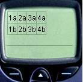

W HTML`u praktycznym sposobem na rozmieszczanie tre¶ci na stronie by³y tabele. Jêzyk wml równie¿ daje nam tak± mo¿liwo¶æ. Podobnie jednak jak przy innych elementach, jego mo¿liwo¶ci s± skromniejsze od HTML`a, przy tworzeniu tabel nale¿y te¿ pamiêtaæ o ma³ych rozmiarach wy¶wietlaczy. Tabela powinna znajdowaæ siê wewn±trz akapitu (otoczona znacznikami <p> </p>)
<table> </table> Pomiêdzy tymi znacznikami znajduje siê nasza tabela, a w znaczniku otwieraj±cym znajduje siê definicja tabeli. <table> jest u¿ywany razem ze znacznikami <tr> i <td>, które okre¶laj± zawarto¶æ poszczególnych komórek, któr± mo¿e byæ tekst lub grafika. <table> okre¶la ilo¶æ kolumn w tabeli, lecz nie mo¿e (odwrotnie wygl±da to w HTML`u) okre¶laæ szeroko¶ci tabeli. Znacznik ten posiada trzy atrybuty;
columns="liczba_kolumn" - zaczynam od tego atrybutu, gdy¿ jest on obligatoryjny i okre¶la ile kolumn zawiera tabela
title="tytul" - tytu³ tabeli nie jest wy¶wietlany na ekraniku
align="wyrównanie" - atrybut ten okre¶la wyrównanie tre¶ci wewn±trz komórki tabeli. Jego warto¶ci s± jednak inne ni¿ mia³o to miejsce w okre¶laniu wyrównania akapitu. Wyrównanie do lewej okre¶lamy "L", do prawej "R", a do ¶rodka "C"
<tr> </tr>- to nic innego jak okre¶lenie wiersza tabeli. W ramach znaczników tabeli mo¿na umie¶ciæ wiele wierszy, które pojawi± siê na ekraniku
<td> </td>- ten znacznik okre¶la ka¿d± pojedyncz± komórkê tabeli, której zawarto¶æ mo¿e byæ wyrównana odpowiednim atrybutem znacznika <table>. Znacznik komórki tabeli musi znajdowaæ siê pomiêdzy znacznikami <tr> </tr>, aby przegl±darka wiedzia³a w jakim wierszu znajduje siê dana komórka. Przyk³adowa tabela mog³aby wiêc wygl±daæ nastêpuj±co;
<table columns="4">
<!-- akurat ta tabela sklada sie z czterech kolumn
kolejne kolumny oznaczylem kolejnymi liczbami a
kolejne wiersze literami -->
<tr>
<td>1a </td>
<td>2a </td>
<td>3a </td>
<td>4a </td>
</tr>
<!-- tutaj zaczyna siê drugi wiersz-->
<tr>
<td>1b </td>
<td>2b </td>
<td>3b </td>
<td>4b </td>
</tr>
</table> |
 |
<img/>
- to znacznik s³u¿±cy do wstawiania grafiki do naszej karty [ang. image]. Podstawowa budowa tego znacznika ma postaæ <img src="plik graficzny">, gdzie plik graficzny to oczywi¶cie nazwa obrazu wraz z rozszerzeniem (.wbmp) je¿eli plik znajduje siê w lokalnym folderze razem z kart± lub lokalizacja- adres internetowy pliku w sieci. Oprócz src [ang. source], znacznik <img> posiada tak¿e inne atrybuty;
alt="tekst_alternatywny" - czyli tekst, który jest wy¶wietlany, gdy nie mo¿na otworzyæ obrazka (np. przegl±darka nie obs³uguje grafiki b±d¼ nie mo¿na znale¼æ pliku pod wskazan± lokalizacj±)
vspace="dlugosc" - bia³a przestrzeñ otaczaj±ca obrazek- oddzielaj±ca od innych elementów karty. Mo¿emy podawaæ j± w pikselach np. vspace="8" lub procentach; vspace="25%". Procenty to jednak nie rozmiary obrazka, a rozmiary wy¶wietlacza.
hspace="dlugosc" - to samo tyle ¿e w poziomie
height="dlugosc" - rozmiar obrazka w pionie. Umo¿liwia skalowanie obrazka do okre¶lonej liczby pikseli (np. height="10") lub do procentowego rozmiaru wy¶wietlacza (np. height="30%"). Tego atrybutu nale¿y u¿ywaæ razem z atrybutem width;
width="dlugosc" - jak wy¿ej, tyle ¿e w poziomie
align="wyrownanie" - okre¶la wyrównanie obrazka wzglêdem otaczaj±cego tekstu (top/middle/bottom)
Jak ju¿ napisa³em w poprzednim artykule, dokumenty wml mog± zawieraæ jedynie grafikê w formacie wbmp, które niestety nie s± zbyt okaza³e. Aby poæwiczyæ rysowanie w nowym formacie kliknij w Nokia WAP Toolkit; File-New-WBMP Image... i po ustaleniu rozmiaru obrazka mo¿esz tworzyæ swoje wapowe dzie³a sztuki.
Wiêcej o narzêdziach do wbmp w narzêdziach
Tabele i obrazy urozmaicaj± nasz± wapow± witrynê, choæ nie napisa³em jeszcze przecie¿ jak mo¿na ³±czyæ miêdzy sob± karty aby móc przechodziæ z jednej do drugiej, ale o tym ju¿ w nastêpnym odcinku...
|